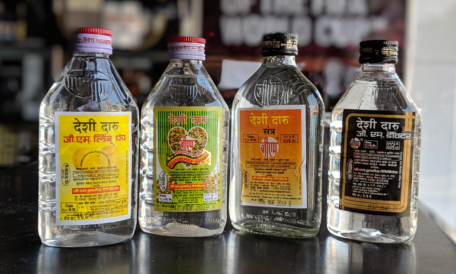

A Taste of India
The traditional food of India has been widely appreciated for its fabulous use of herbs and spices. Indian cuisine is known for its large assortment of dishes. The cooking style varies from region to region and is largely divided into South Indian & North Indian cuisine.y in diversity.
Sharaab

Desi daru is probably the most popular indigenous alcoholic drink available in India. It is made from the byproduct of sugarcane, called molasses. Apart from the locally produced wine and alcoholic drinks by tribes, desi daru is the mainstay for a major rural population in India.